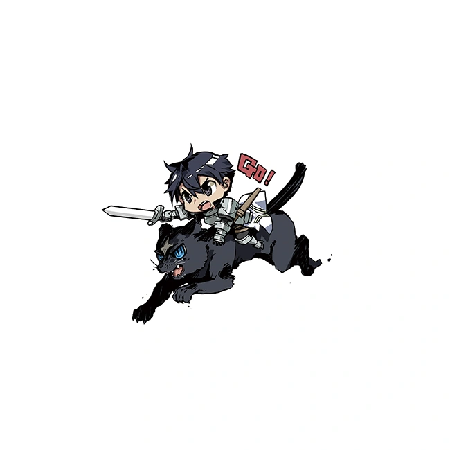
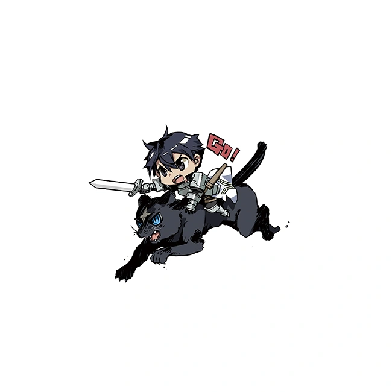

Sword Art Online Volume 24 - Unital Ring III
Sinopsis
En un «Inframundo» doscientos años más antiguo, ¡a Kirito le espera un encuentro fatídico!
Un reencuentro con Kikuoka Seijirou, el funcionario del Departamento Virtual del Ministerio del Interior. Esto lleva a que Kirito, Asuna y Alice sean invitados a visitar un «Inframundo» donde han pasado doscientos años desde la «Gran Guerra».
Cuando descendieron de nuevo al mundo, los esperaban los descendientes de Ronye y Tiese... y también...
"¿Así que esta es la encarnación del hombre que se hace llamar «Rey de las Estrellas»? ――Un placer conocerte, Kirito-kun".
El hombre que se hace llamar el Comandante de la 《Orden de Pilotos de Integridad》 tiene los mismos ojos que 《él》 que Kirito había perdido una vez－
Mientras tanto, en el mundo de 《Unital Ring》, ¡la mayor 《malicia》 que tiene en la mira a Kirito y sus amigos finalmente se revela!
Ilustraciones
Las siguientes son las ilustraciones que se incluyen en el volumen 24:
 
